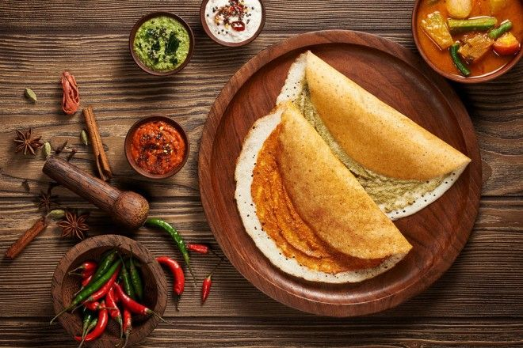
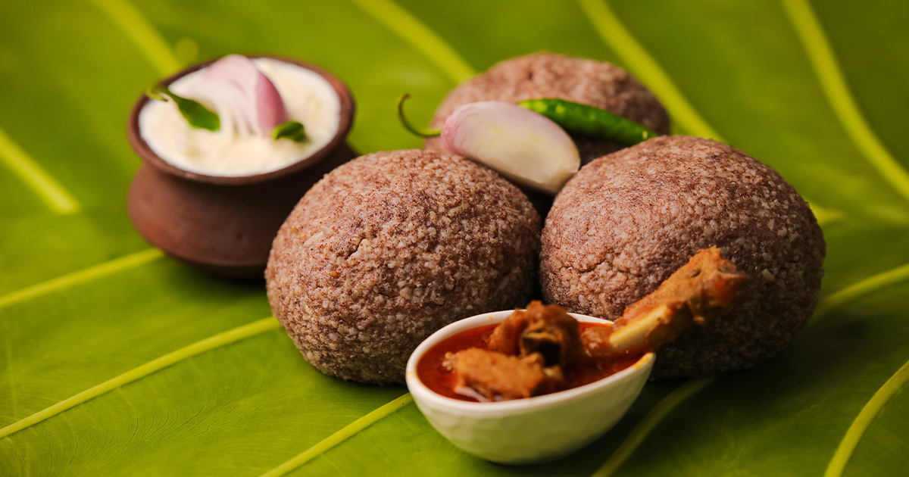
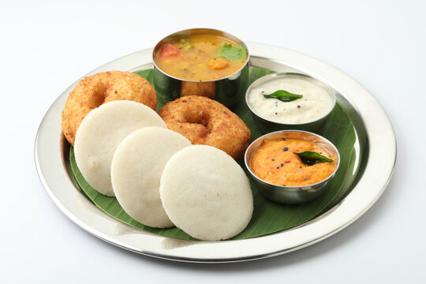
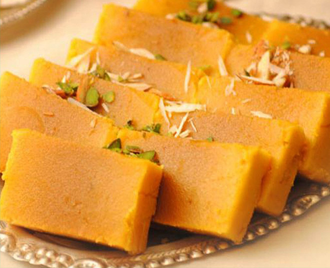
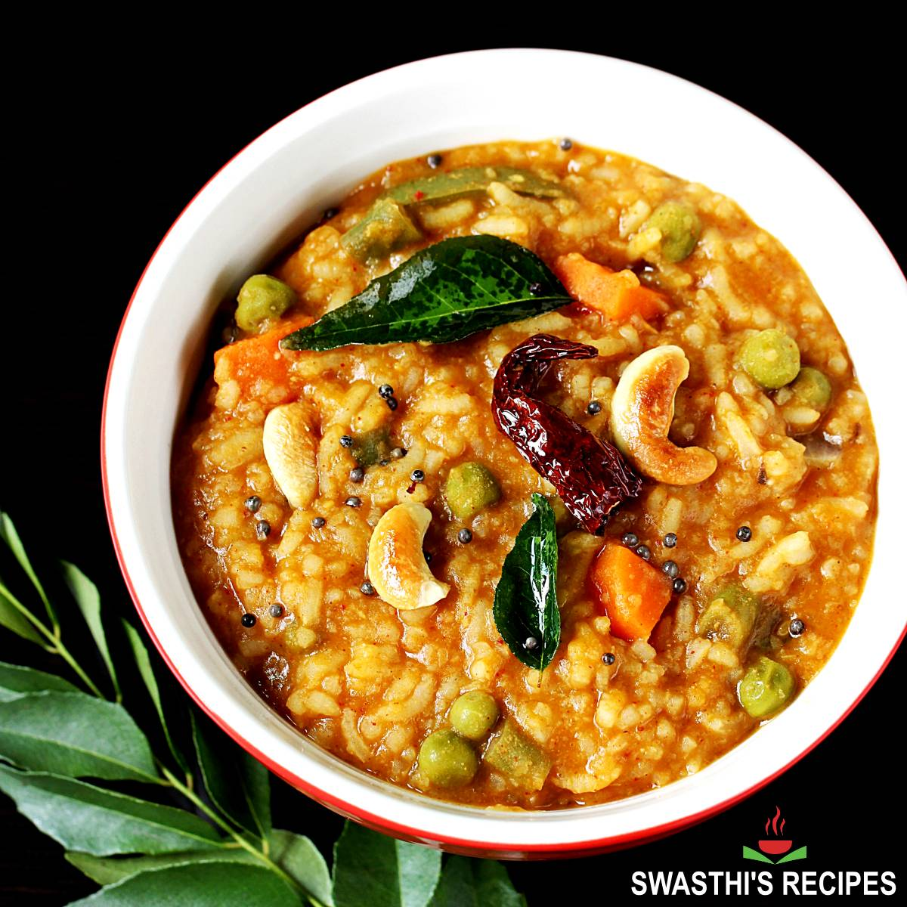
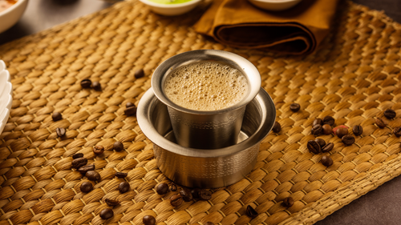

Masala Dosa is a crispy South Indian crepe made from fermented rice and lentil batter. Filled with spiced potato masala, it is a popular and loved breakfast in Bengaluru.

Ragi Mudde is a traditional Karnataka dish made from finger millet flour shaped into soft balls. It is usually eaten with spicy curry or sambar and is nutritious and filling.

Idli–Vada is a classic South Indian breakfast from Bengaluru, featuring soft steamed idlis and crispy fried vadas. Served with coconut chutney and sambar, it is light, flavorful, and widely loved.

Mysore Pak is a rich and sweet South Indian delicacy made with ghee, sugar, and gram flour. Soft, melt-in-the-mouth, and aromatic, it is a famous treat from Bengaluru and Mysore.

Bisi Bele Bath is a traitional Karnataka dish made with rice, lentils, vegetables, and a special spice mix. Hearty, flavorful, and mildly spiced, it is a comforting meal popular in Bengaluru.

Filter Coffee is a strong and aromatic South Indian coffee brewed using a traditional metal filter. Made with freshly ground coffee beans and hot milk, it is a daily favorite in Bengaluru and across Karnataka.